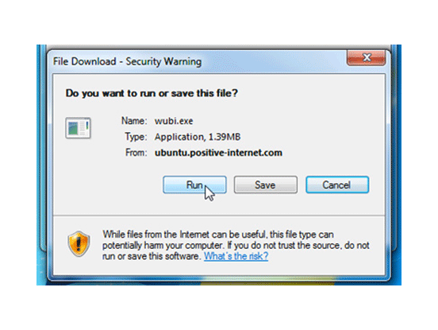
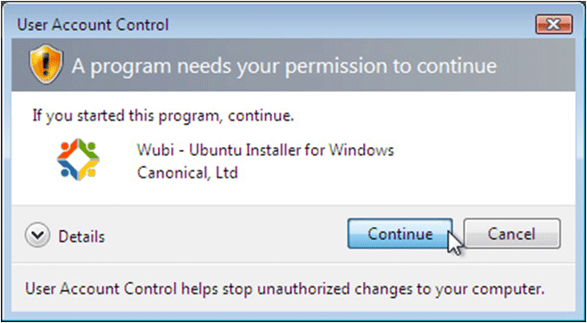
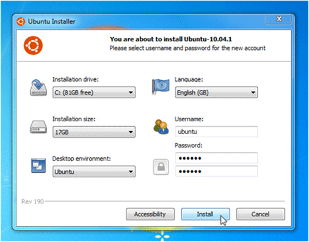
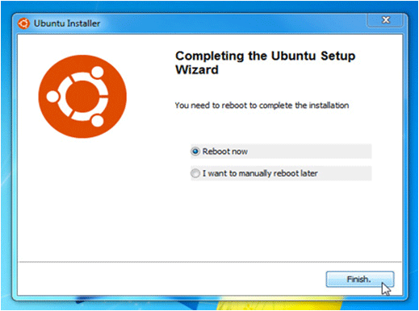
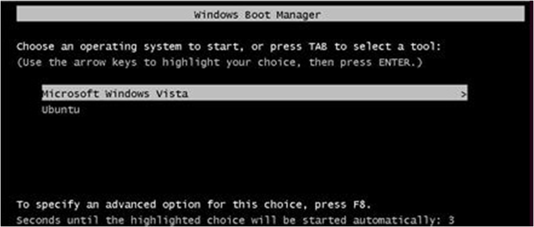

Installing Ubuntu Windows Unbuntu Installer (WUBI)
iHRIS Administrator - Level I, © IntraHealth International, CC BY 4.0. Originally offered at hrhresourcecenter.org/elearning (CapacityPlus). Licence stated by its author, the folio owner, 2026-10-09.
1. Install Ubuntu with Windows Ubuntu Installer
Ubuntu is an operating system designed to control your computer.
Why you should install Ubuntu with WUBI:
- this installation method works if you already have Windows installed on your computer
- WUBI lets you install Ubuntu so that you can dual boot: when booting your computer you can choose either Windows or Ubuntu
- this installation method allows you to try out Ubuntu without making significant changes to your computer
2. Download WUBI
Download WUBI from: http://www.ubuntu.com/desktop/get-ubuntu/windows-installer
Click the orange button to start downloading.
Run the downloaded file.

3. Run WUBI
Windows may ask your permission to run WUBI; click "Continue".

4. Run WUBI
Choose a username and password.

Click "Install" (this is a 700 mb download).
5. Run WUBI
After downloading Ubuntu, WUBI will install.
To run Ubuntu, you need to restart your computer.

6. Reboot with Ubuntu
When you reboot your computer, it will ask you if you want to run Windows or Ubuntu.
Scroll down on the menu and choose Ubuntu.

Source
Lesson in Section 1 of iHRIS Administrator - Level I, Moodle course module cm-45; library/ihris-admin-course/modules/cm-45.md.